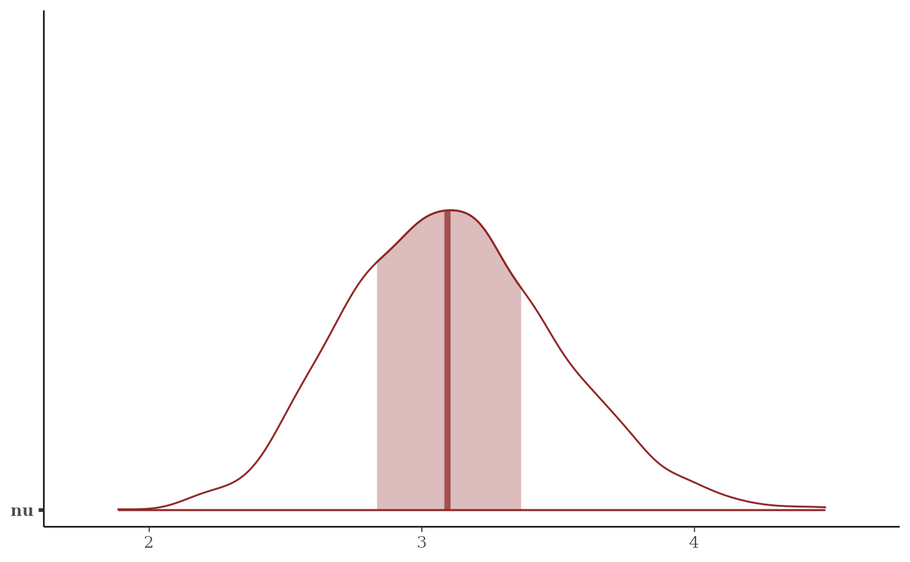
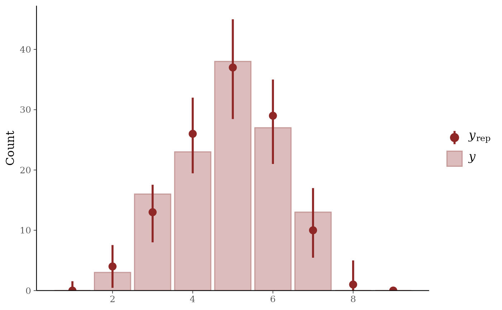

Conway-Maxwell-Binomial family for over-, equi-, under-, and super-dispersed bounded counts
Source:R/families.R
com_binomial.RdA two-parameter generalisation of the binomial that exponentiates
the binomial coefficient by a real-valued dispersion parameter
nu. nu = 1 is the standard binomial. nu > 1 under-disperses,
concentrating mass near the mode. 0 < nu < 1 over-disperses.
nu < 0 super-disperses, producing bimodal "all-or-nothing" mass at
the boundaries. Useful when a binomial fit shows systematic lack-of-fit
in either tail and the response is bounded by a known trial count.
Arguments
- link
Link function for the success probability
p. Currentlylogitonly. The COM-Binomial PMF factorises cleanly only against the canonical logit parameterisation. For that reason,probitandcloglogare not exposed.
Value
A brms::custom_family() object suitable for the
family argument of mvgam() / jsdgam(). The object has an
attr(., "mvgam_stanvars") attribute, which holds the Stan
function-block stanvar. mvgam's setup attaches it automatically.
Distributional parameters
mulogit-scale success probability (link =
logit). Distributional regression onmuis the standard formula side:bf(y | trials(trials) ~ x).nureal-valued dispersion exponent (link =
identity,lb = -5).nu = 1is binomial. Distributional regression is supported viabf(y | trials(trials) ~ x, nu ~ z). The support is0:T, a finite range. The normalising sum runs overT + 1positive terms at every realnu, which keeps the density proper with no lower bound on it.lb = -5is a numerical floor. The log factorial term grows with-nu. Gradients past that point are hard for the sampler. A scalarnucarries the floor asreal<lower=-5>with a prior truncated to match. A modellednuis a linear predictor and carries no such declaration, leavingnu[n]free. Hold the predictor inside the range the data resolve, roughly(-1, 4).
Default priors
nu ~ normal(1, 1)-- centred atnu = 1, where the trials are independent and the distribution is binomial. The scale spans the range the data can resolve. The response saturates belownu = -1and abovenu = 4. Values outside roughly(-1, 4)are barely distinguishable. Strongly under-dispersed data havenunear 3. Override withprior(normal(1, 2), class = "nu")to explore wider, or a tighter scale to pull harder toward the binomial.
Sampler notes
Two corners of (p, nu) parameter space stress HMC and should
be monitored:
nu >> 1: the PMF concentrates on a single mode and the log-normaliser gradient saturates; max-treedepth saturation becomes possible above roughlynu = 5.nu << 0withpnear0.5: mass concentrates at both boundaries and the likelihood is invariant underp -> 1 - p, producing bimodal posteriors. Asymmetric covariates break the symmetry.
Inspect mcmc_plot(fit, variable = "nu", type = "trace") and
the R-hat + ESS on both nu and the intercept; if either
degrades, tighten the prior on nu or shift the design to
bias p away from 0.5.
References
Shmueli, G., Minka, T. P., Kadane, J. B., Borle, S. and Boatwright, P. (2005). A useful distribution for fitting discrete data: revival of the Conway-Maxwell-Poisson distribution. Journal of the Royal Statistical Society Series C, 54:127-142.
Conway, R. W. and Maxwell, W. L. (1962). A queuing model with state dependent service rates. Journal of Industrial Engineering, 12:132-136.
Examples
# \dontrun{
# Counts out of 10 trials, simulated with `nu = 3`. At `nu = 1`
# the family is the binomial. Values above 1 give counts with
# less spread than a binomial.
set.seed(1)
sim <- sim_mvgam(
family = com_binomial(),
n_series = 1L,
n_timepoints = 160L,
trend_model = "None",
family_pars = list(nu = 3, trials = 10L)
)
# The denominator enters through brms's `trials()` term
fit <- mvgam(
bf(y | trials(trials) ~ s(x)),
data = sim$data_train,
family = com_binomial(),
chains = 2,
silent = 2
)
# The posterior for `nu` lies above the binomial's value of 1
summary(fit)
#> Family: com_binomial
#> Links: mu = logit; nu = identity
#> Formula: y | trials(trials) ~ s(x)
#> Data: sim$data_train (Number of observations: 120)
#> Draws: 2 chains, each with iter = 2000; warmup = 1000; thin = 1;
#> total post-warmup draws = 2000
#>
#> == Observation Model ==
#> Smoothing Spline Hyperparameters:
#> Estimate Est.Error l-95% CI u-95% CI Rhat Bulk_ESS Tail_ESS
#> sds(sx_1) 4.44 1.56 2.15 8.27 1.00 878 1102
#>
#> Regression Coefficients:
#> Estimate Est.Error l-95% CI u-95% CI Rhat Bulk_ESS Tail_ESS
#> Intercept -0.12 0.10 -0.32 0.08 1.00 2241 1410
#> sx_1 -2.96 5.75 -14.11 9.66 1.00 877 876
#>
#> Further Distributional Parameters:
#> Estimate Est.Error l-95% CI u-95% CI Rhat Bulk_ESS Tail_ESS
#> nu 3.11 0.39 2.41 3.93 1.00 1913 1319
#>
#> Draws were sampled using sampling(NUTS). For each parameter, Bulk_ESS
#> and Tail_ESS are effective sample size measures, and Rhat is the potential
#> scale reduction factor on split chains (at convergence, Rhat = 1).
#>
#> Next steps:
#> - `pp_check(fit)`: posterior predictive checks
#> - `forecast(fit, newdata = ...)`: out-of-sample forecasts
#> - `loo(fit)` / `loo_compare(...)`: model fit + comparison
#> - `conditional_effects(fit)`: covariate effects
#> Use `how_to_cite(fit)` for a methods paragraph and `methods_md(fit)` for its equations.
mcmc_plot(fit, variable = "nu", type = "areas")

pp_check(fit, type = "bars", ndraws = 50)

# }